群巒傳說中的礦物和礦石可稱得上是稀有資源。與原版不同，礦石只會生成在龐大，但稀少的礦脈結構中。要想找到礦脈，就必須熟練掌握勘礦技巧。有些礦石只會出現在特定的岩石型別中或高度上。因此，勘礦的一大關鍵步驟便是找到正確的岩石型別和高度。
部分礦石是會分不同品質的。礦石的品質有三種：貧瘠、普通、和富集。此外，每個礦脈結構的礦物密度也會有所不同。採掘同品質的礦石，在更豐盛的礦脈中的效率會更高。
接下來的幾頁展示了不同型別的礦石，以及可以在哪裡找到它們。
原生銅是銅礦石的一種。它可以生成在任何深度的噴出巖中，但更深的礦脈通常更豐盛。
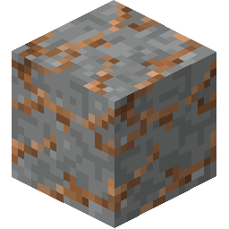
英安巖中的原生銅礦。
原生金可以熔鍊成金。它只會出現在 y=60 以下的噴出巖和侵入岩中，且更深的礦脈通常更豐盛。
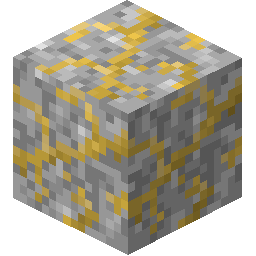
閃長巖中的原生金礦。
原生銀可以熔鍊成銀。它只會出現在 y=-32 到 y=100 之間。它主要生成於花崗岩和片麻岩中，但任何其他變質岩中都有可能生成，只不過礦脈的質量和密度會差些。
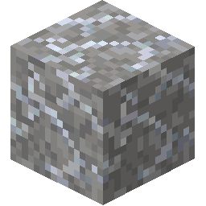
花崗岩中的原生銀礦。
赤鐵礦是鐵礦石的一種。它只會出現在 y=75 以下的噴出巖中。
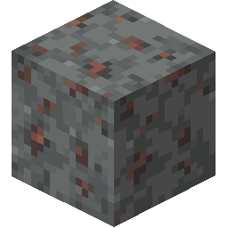
安山岩中的赤鐵礦。
錫石可以熔鍊成錫。它可以在生成在任何深度的侵入岩中，但更深的礦脈通常更豐盛。
生成在花崗岩中時，錫石礦脈也可能含有痕量黃玉。
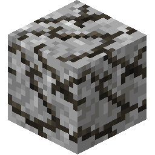
閃長巖中的錫石礦。
輝鉍礦可以熔鍊成鉍。它可以生成在任何深度的侵入岩或沉積岩中，但更深的礦脈通常更豐盛。
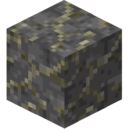
頁岩中的輝鉍礦。
綠鎳礦可以熔鍊成鎳。它只會出現在 y=-32 到 y=100 之間。它主要生成於輝長岩中，但任何其他侵入岩中都有可能生成，只不過礦脈的質量和密度會差些。
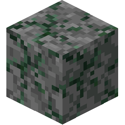
輝長岩中的綠鎳礦。
孔雀石是銅礦石的一種。它只會出現在 y=-32 到 y=100 之間。它主要生成於大理岩或石灰岩中，但千枚巖、白堊巖、和白雲岩中也有可能生成，只不過礦脈的質量和密度會差些。
生成在石灰岩中時，孔雀石礦脈也可能含有痕量石膏。
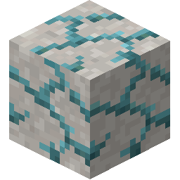
大理石中的孔雀石礦。
磁鐵礦可以熔鍊成鐵。它只會出現在 y=60 以下的沉積岩中，且更深的礦脈通常更豐盛。
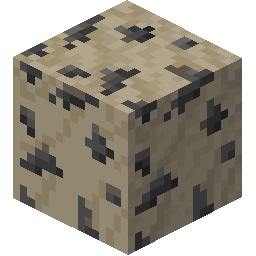
石灰石中的磁鐵礦。
褐鐵礦是鐵礦石的一種。它只會出現在 y=60 以下的沉積岩中，且更深的礦脈通常更豐盛。
生成在石灰岩或頁岩中時，褐鐵礦脈也可能含有痕量紅寶石。
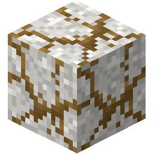
白堊巖中的褐鐵礦。
閃鋅礦可以熔鍊成鋅。它可以生成在任何深度的變質岩中，但更深的礦脈通常更豐盛。
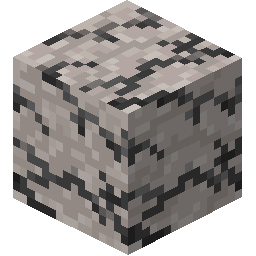
石英岩中的閃鋅礦。
黝銅礦是銅礦石的一種。它可以生成在任何深度的變質岩中，但更深的礦脈通常更豐盛。
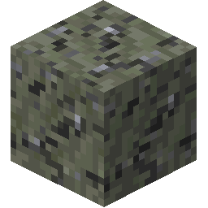
片岩中的黝銅礦。
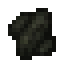
煙煤是煤礦石的一種。它只會出現在 y=0 以上的沉積岩中。
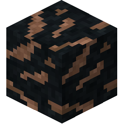
矽質岩中的煙煤。
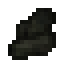
褐煤是煤礦石的一種。它只會出現在 y=100 以上的沉積岩中。
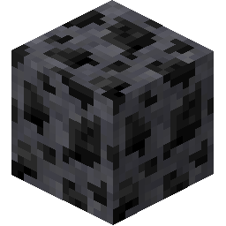
白雲石中的褐煤。
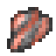
高嶺石是一種用於製作耐火粘土的礦物。它只會出現在 y=0 以上的沉積岩中。
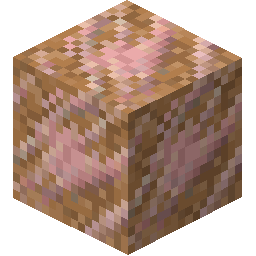
粘土巖中的高嶺石。
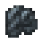
石墨是一種用於製作耐火粘土的礦物。它只會出現在 y=100 以上的片麻岩、大理岩、石英岩和片岩中。
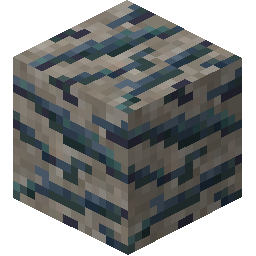
片麻岩中的石墨。
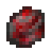
硃砂是一種可以在手推磨中磨成紅石粉的礦物。它只會出現在 y=100 以下的侵入岩、石英岩和片岩中。
生成在石英岩中時，硃砂礦脈也可能含有痕量蛋白石。
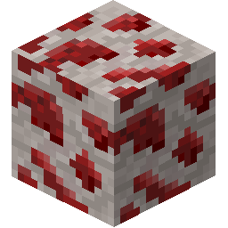
石英岩中的硃砂。
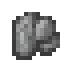
冰晶石是一種可以在手推磨中磨成紅石粉的礦物。它只會出現在 y=100 以下的花崗岩中。
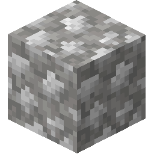
花崗岩中的冰晶石。
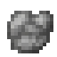
硝石是一種可以在手推磨中磨成火藥的礦物。它只會出現在 y=100 以下的沉積岩中。
生成在石灰岩中時，硝石礦脈也可能含有痕量石膏。
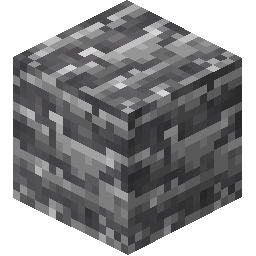
頁岩中的硝石。
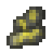
硫磺是一種可以在手推磨中磨成火藥的礦物。它只會出現在 y=0 以上的噴出巖中。在地質活躍的地區中，硫磺會更為頻繁地出現在深度較淺的噴出巖和侵入岩中。
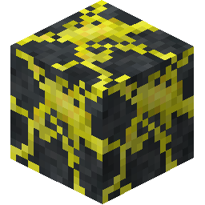
玄武岩中的硫磺。
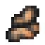
鉀石鹽是一種可以在手推磨中磨成鉀石鹽粉、用於堆肥的礦物。它只會出現在 y=0 以上的頁岩、粘土巖和矽質岩中。
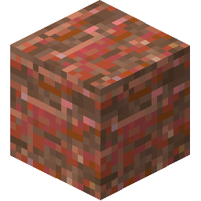
矽質岩中的鉀鹽
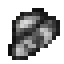
硼砂是一種可以在手推磨中磨成助焊劑的礦物。它只會出現在 y=0 以上的粘土巖、石灰岩和頁岩中。
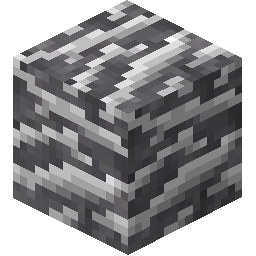
頁岩中的硼砂。
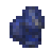
青金石是一種裝飾性的礦物，可以做成染料。它只會出現在在 y=100 以下的石灰岩和大理岩中。
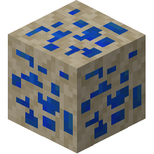
石灰岩中的青金石。
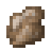
石膏是一種用來做裝飾品的礦物，可以做成雪花石膏。它會以一種密集碟狀礦脈的形式在 y=30 到 y=90 之間的變質岩中生成。
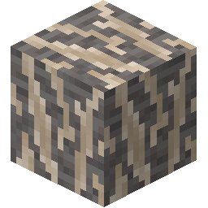
千枚巖中的石膏。
石鹽是一種可以在手推磨中磨成鹽的礦物，而鹽可以用來儲存食物。它會以一種密集碟狀礦脈的形式在 y=30 到 y=90 之間的沉積岩中生成。
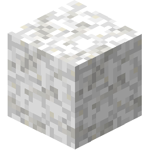
白堊巖中的石鹽。
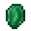
祖母綠是一種用來做裝飾品的寶石。它看起來相當漂亮，要是這個孤苦伶仃的世界上有其他人願意用它和你交易就好了……
它的礦脈形狀細長，垂直方向可達 60 方塊。它只會在侵入岩中出現。
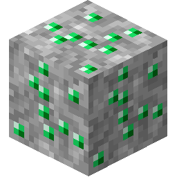
閃長巖中的祖母綠。
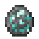
金伯利岩是一種用來做裝飾品的無價之寶。它只會形成於一種被稱為火山筒的礦脈結構中，其垂直方向可達 60 方塊。金伯利岩只能在輝長岩中生成。
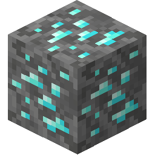
輝長岩中的金伯利岩。